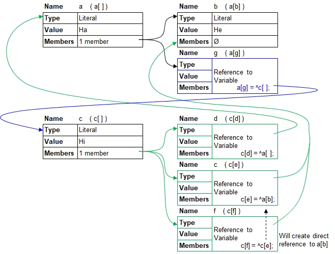
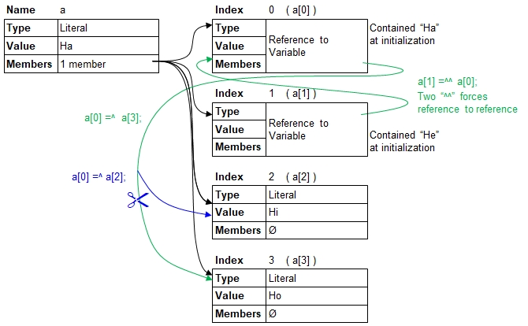

Introduction
The past examples have been made with simple references. However B4P also allows declaring member variables in structures and arrays as references. Here, a similar rule applies that references can only be made on member variables which are not yet existing or do not contain their own sub-members. Two code examples below illustrate this powerful feature.
Example 1
In the following example, 3 members in variable c[] point to variable a[] and a[g] accordingly. In addition, a[g] is a reference which
referst to c[]. An "eight-loop" has been created, and the code example demonstrates that you can walk the path through the loop multiple times.

// Black part in illustration
a[] = Ha;
a[b] = He;
c[] = Hi;
// Greeen part in illustration
c[d] = ^a[];
c[e] = ^a[b];
c[f] = ^c[e]; // references to a[b]
echo( c[d],", ", c[e] ); // Ha,He
// Blue part of illustration
a[g] = ^c[];
echo( a[g],", ", a[g,d] ); // Hi, Ha
// You can loop around multiple times if you wish:
echo( a[g,d,b] ); // He
echo( a[g,d,g],", ", a[g,d,g,d], ", ", a[g,d,g,d,g] ); // Hi, Ha, HiHa, He
Hi, Ha
He
Hi, Ha, Hi
Example 2
In the following example, 3 members in variable c[] point to variable a[] and a[g] accordingly. In addition, a[g] is a reference which
referst to c[]. An "eight-loop" has been created, and the code example demonstrates that you can walk the path through the loop multiple times.

// Black part in illustration
array( a[ ],{Ha,He,Hi,Ho} );
// Green part in illustration
a[0] =^ a[3];
a[1] =^^ a[0]; // a[1] refers to a[0] (and not to a[3] directly)
echo( a[0],", ", a[1] ); // Ho, Ho
// Blue part in illustration
a[0] =^ a[2];
echo( a[0],", ", a[1] ); // Hi, HiHo, Ho
Hi, Hi
Avoid Tail-Biting
Be aware that you do not build up references resembling infinite loops because B4P will start circling around through 1 or more variables. See the following code examples with one variables and the tail-biting effect with two variables.
// Bad example 1: 1 dog runs in a circle, attempting to bite its own tail
a[] = a[];
// Bad example 2: 2 dogs run in a circle, attempting to bite each other's tails
x[] = 5;
y[] =^x[];
x[] =^y[];